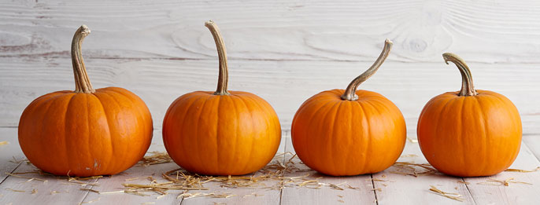

2 eggs
1 16 oz can pumpkin puree
1 14 oz can sweetened condensed milk
1 9 inch unbaked pie crust
Preheat the oven to 425 degrees F (220 degrees C)
Combine eggs, pumpkin puree, sweetened condensed milk, and pumpkin pie spice in a large bowl and mix until combined
Fit pie crust into a 9-inch pie dish; pour pumpkin mixture into the crust
Place pie on a baking sheet and bake in the preheated oven for 15 minutes. Reduce heat to 350 degrees F (175 degrees C) and bake until filling is set, 35 to 40 minutes
Recipe is easy to follow since there aren't many ingredients and the steps are very simple. The website is laid out so that the ingredients list and steps are well organized and easy to follow. There is also the section at the bottom that offers more in-depth pointers if needed.
This recipe is also very easy to follow and the content is organized well. What sets this recipe apart from the last one is that the steps are more in-depth which may be helpful for beginners or people who are very particular about their cooking.
This recipe is very simple and to-the-point. It allows for quick reading and quick baking with very few extraneous details.
Discord's webpage is effective in communicating the fun and youth-oriented branding of the discord app. It is also very effective at immediately direcitng the viewer to a login button and download button, which are the two most important functions for using discord. I really like its straightforwards nature.
The Wikipedia homepage is quite full of information, it provides the user with helpful descriptions on recent articles that can be quickly skimmed to get a better idea of the article's content. The sidebar on the left side gives the viewer immediate access to various tools and settings without the need of a dropdown menu.
The Calarts homepage is like a more well-designed version of the standard college homepage, everything is easy to read and easy to find. The balance of dropdown menus to buttons to articles that can be accessed via scrolling is very nice. I personally hate trying to click on one button and being greeted with a lengthy dropdown menu. I'm also just a fan of the modern looking fonts and the slight tilt given to the menu items.
